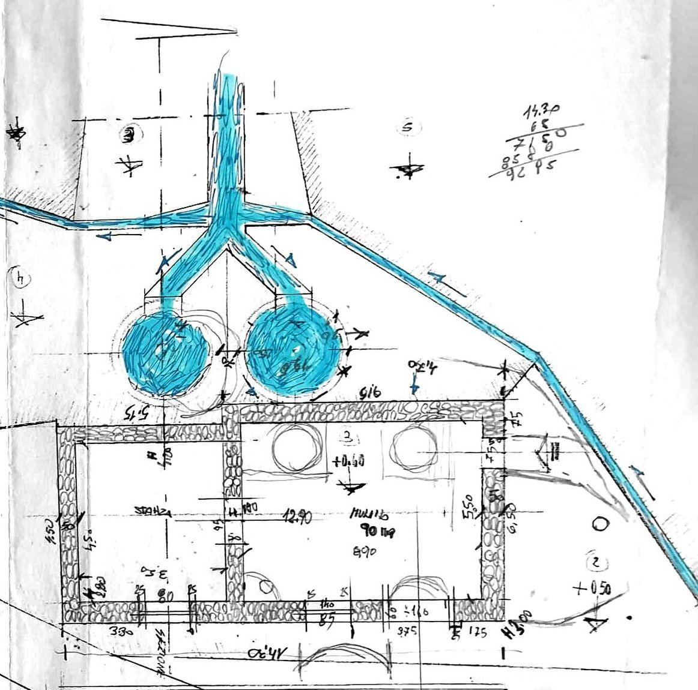
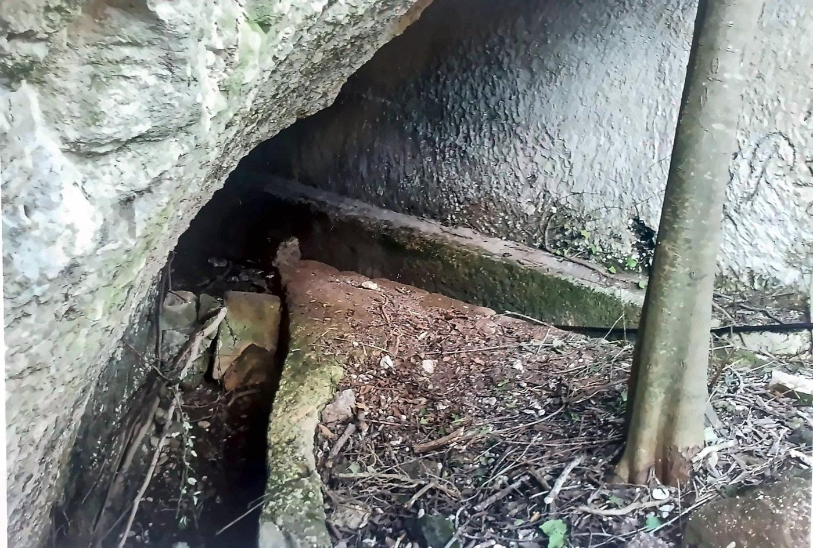
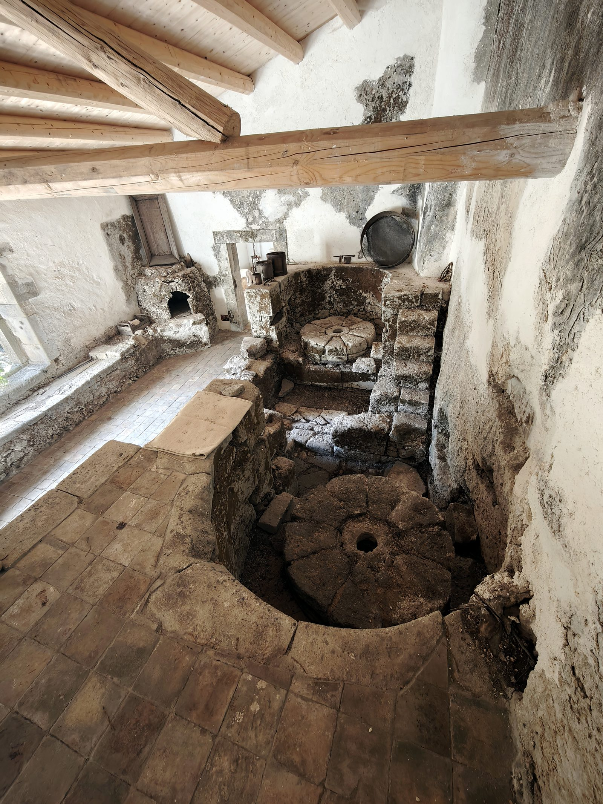
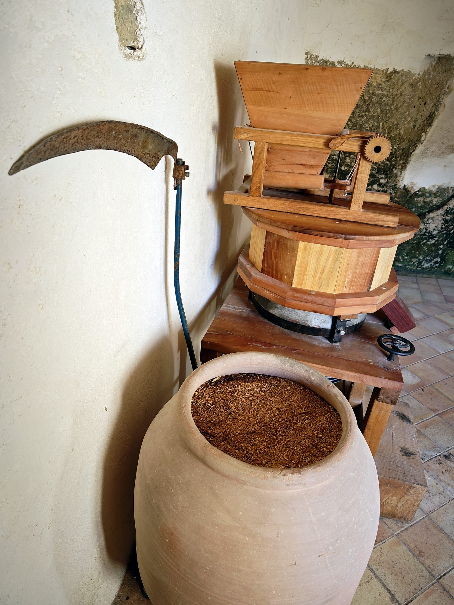
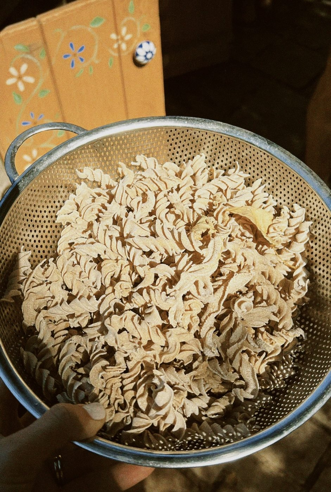
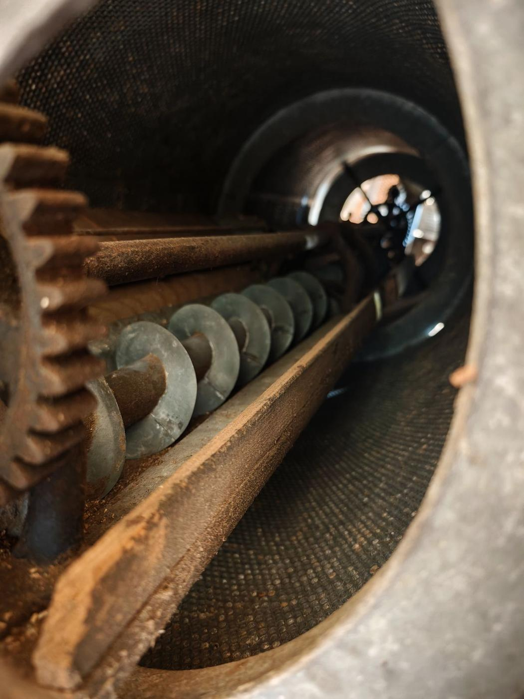
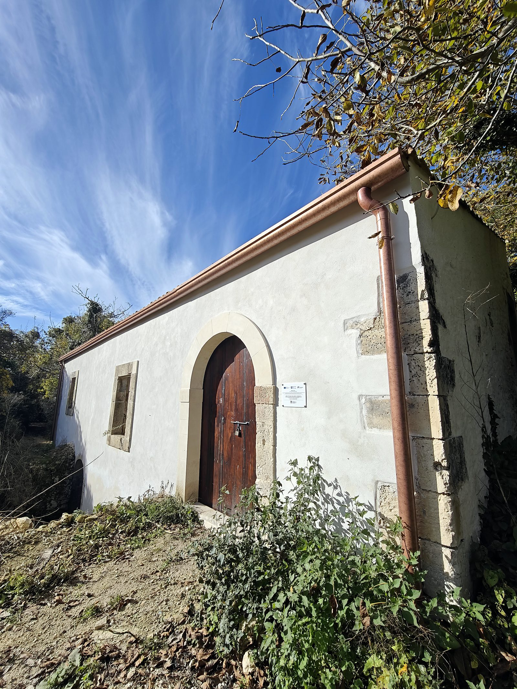

Il primo sacco di grano
torna al vecchio mulino
dopo 150 anni.


Dietro il muro e il cancello.
Così è rimasto il mulino per decenni: senza tetto, chiuso dietro un cancello di ferro e un lungo muro a secco. Il disegno sullo sfondo lo mostra in sezione, misurato a mano prima del restauro.


L'antica macina
Sotto la terra, poi pulita a mano. Fai scorrere per vederla tornare alla luce.


Costruito dove cadeva l'acqua.
L'edificio che vediamo risale al Settecento, su fondamenta di origine molto più antica, romana e forse greca. Un tempo l'acqua cadeva dietro il muro, faceva girare la macina e usciva da un arco. Oggi non scorre più, e le macine riposano. Prima di spostare qualsiasi cosa, il mulino è stato misurato e disegnato a mano.
ESPLORA IL MULINO AD ACQUA →




Gira di nuovo, dal 1956.
In una stanza vuota della stessa casa c'è un secondo mulino: un mulino elettrico in granito del 1956. È stato acquistato rotto, con il legno marcio, e restaurato tavola dopo tavola in rovere e castagno. Le macine e i meccanismi sono originali, e gira solo per dimostrazioni didattiche.
ESPLORA IL MULINO DEL SOLE →


Da rudere a mulino restaurato.
Fai scorrere ogni fotografia per passare dal prima al dopo.



Dal chicco alla tavola.
Nel laboratorio didattico del mulino i visitatori seguono il grano duro dal campo alla macina, e scoprono come diventa pane, pasta e pizza.
Gli strumenti del grano.
Oggetti della vita contadina, custoditi dove venivano usati: la tavola con le pietre, il pulitore del grano con la sua coclea e il setaccio, la madia e il piccone.
VEDI TUTTI I REPERTI →


Finanziato dall'Unione europea attraverso il Piano Nazionale di Ripresa e Resilienza.